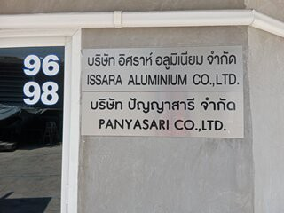

บริษัท อิศราห์ ไอเดีย จำกัด ตั้งอยู่ที่ เลขที่ 96,98 ซอยพระยามนธาตุราชศรีพิจิตร์ แขวงคลองบางบอน เขตบางบอน
กรุงเทพมหานคร 10150 บริษัท อิศราห์ ไอเดีย ก่อตั้งเมื่อ วันที่ 7 กุมภาพันธ์ พ.ศ.2556 โดย คุณ ปุณณภพ ชำมะนาด ตอนนี้ ผู้รักษาการแทน
คุณ ชฏาพร ดุรงค์บรรพต ซึ่งประกอบธุรกิจการ การผลิตและจำหน่ายแผนผนังอลูมิเนียม ซึ่งบริษัท อิศราห์ ไอเดีย เป็นลูกข่ายของ
บริษัท ด่านบุษย์ คอลเปอเรชั่น จำกัด
บริษัทฯ มีบริการการออกแบบให้แก่ลูกค้า โดยทีมงานมืออาชีพที่มีประสบการณ์ด้านนี้มากกว่า 10 ปี ด้วยความสามารถในการผลิตเพื่อ
รองรับความต้องการจำนวนมาก โดยคำนึงถึงความคุ้มค่าและคุณภาพเป็นสำคัญ